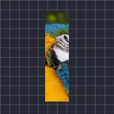

বাঁক

লেয়ারকে বৃত্তচাপে বাঁকায়; অরিজিন পাশ স্থির থাকে, বিপরীত পাশ আপনার দেওয়া কোণে ঘোরে—ধনাত্মক কোণ বাম দিকে। লম্বা ও পাতলা লেয়ারে সবচেয়ে ভালো।
সেটিংস
| সেটিং | ধরন | রেঞ্জ | ডিফল্ট |
|---|---|---|---|
| অরিজিন | পছন্দ | বাম, ডান, উপর, নিচ | নিচ |
| কোণ | কোণ | -180° থেকে 180° | 0° |
| শুরু | সংখ্যা | 0% থেকে 100% | 0% |
| শুরুর আগে | পছন্দ | ফ্রিজ, একই পাশে বাঁকান, বিপরীত পাশে বাঁকান | ফ্রিজ |
| হেড টিউন | সংখ্যা | 0% থেকে 100% | 75% |
| টেইল টিউন | সংখ্যা | 0% থেকে 100% | 25% |